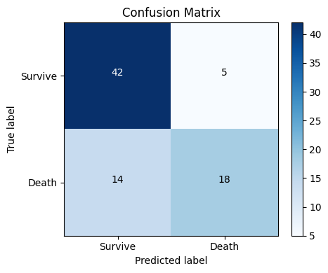
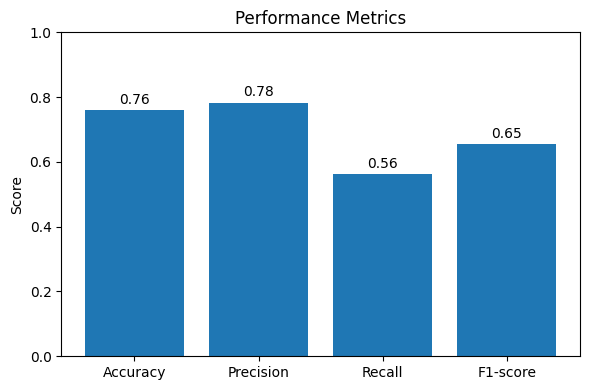

UTS Analisis data#
pengambilan data#
import pandas as pd
import numpy as np
import matplotlib.pyplot as plt
from sklearn.model_selection import train_test_split
# Load dataset dari UCI repository
url = "https://archive.ics.uci.edu/static/public/878/cirrhosis+patient+survival+prediction+dataset-1.zip"
data = pd.read_csv(url)
data.head()
pd.set_option('display.max_columns', None)
pd.set_option('display.max_rows', None)
print(data.head())
ID N_Days Status Drug Age Sex Ascites Hepatomegaly Spiders \
0 1 400 D D-penicillamine 21464 F Y Y Y
1 2 4500 C D-penicillamine 20617 F N Y Y
2 3 1012 D D-penicillamine 25594 M N N N
3 4 1925 D D-penicillamine 19994 F N Y Y
4 5 1504 CL Placebo 13918 F N Y Y
Edema Bilirubin Cholesterol Albumin Copper Alk_Phos SGOT \
0 Y 14.5 261.0 2.60 156.0 1718.0 137.95
1 N 1.1 302.0 4.14 54.0 7394.8 113.52
2 S 1.4 176.0 3.48 210.0 516.0 96.10
3 S 1.8 244.0 2.54 64.0 6121.8 60.63
4 N 3.4 279.0 3.53 143.0 671.0 113.15
Tryglicerides Platelets Prothrombin Stage
0 172.0 190.0 12.2 4.0
1 88.0 221.0 10.6 3.0
2 55.0 151.0 12.0 4.0
3 92.0 183.0 10.3 4.0
4 72.0 136.0 10.9 3.0
Pemahaman Data ( data understanding)#
import pandas as pd
import matplotlib.pyplot as plt
print("Shape:", data.shape)
print("\nInfo DataFrame:")
data.info()
print("\nStatistik deskriptif (numerik):")
print(data.describe().T)
missing_pct = data.isna().mean().sort_values(ascending=False) * 100
print("\nPersentase missing value per kolom:")
print(missing_pct)
categorical = ['Drug', 'Sex', 'Ascites', 'Hepatomegaly', 'Spiders', 'Edema', 'Status']
for col in categorical:
print(f"\nValue counts '{col}':")
print(data[col].value_counts(dropna=False))
numeric_cols = data.select_dtypes(include=['float64','int64']).columns
data[numeric_cols].hist(bins=15, figsize=(12,8))
plt.suptitle("Distribusi Fitur Numerik")
plt.tight_layout()
plt.show()
Shape: (418, 20)
Info DataFrame:
<class 'pandas.core.frame.DataFrame'>
RangeIndex: 418 entries, 0 to 417
Data columns (total 20 columns):
# Column Non-Null Count Dtype
--- ------ -------------- -----
0 ID 418 non-null int64
1 N_Days 418 non-null int64
2 Status 418 non-null object
3 Drug 312 non-null object
4 Age 418 non-null int64
5 Sex 418 non-null object
6 Ascites 312 non-null object
7 Hepatomegaly 312 non-null object
8 Spiders 312 non-null object
9 Edema 418 non-null object
10 Bilirubin 418 non-null float64
11 Cholesterol 284 non-null float64
12 Albumin 418 non-null float64
13 Copper 310 non-null float64
14 Alk_Phos 312 non-null float64
15 SGOT 312 non-null float64
16 Tryglicerides 282 non-null float64
17 Platelets 407 non-null float64
18 Prothrombin 416 non-null float64
19 Stage 412 non-null float64
dtypes: float64(10), int64(3), object(7)
memory usage: 65.4+ KB
Statistik deskriptif (numerik):
count mean std min 25% \
ID 418.0 209.500000 120.810458 1.00 105.2500
N_Days 418.0 1917.782297 1104.672992 41.00 1092.7500
Age 418.0 18533.351675 3815.845055 9598.00 15644.5000
Bilirubin 418.0 3.220813 4.407506 0.30 0.8000
Cholesterol 284.0 369.510563 231.944545 120.00 249.5000
Albumin 418.0 3.497440 0.424972 1.96 3.2425
Copper 310.0 97.648387 85.613920 4.00 41.2500
Alk_Phos 312.0 1982.655769 2140.388824 289.00 871.5000
SGOT 312.0 122.556346 56.699525 26.35 80.6000
Tryglicerides 282.0 124.702128 65.148639 33.00 84.2500
Platelets 407.0 257.024570 98.325585 62.00 188.5000
Prothrombin 416.0 10.731731 1.022000 9.00 10.0000
Stage 412.0 3.024272 0.882042 1.00 2.0000
50% 75% max
ID 209.50 313.75 418.00
N_Days 1730.00 2613.50 4795.00
Age 18628.00 21272.50 28650.00
Bilirubin 1.40 3.40 28.00
Cholesterol 309.50 400.00 1775.00
Albumin 3.53 3.77 4.64
Copper 73.00 123.00 588.00
Alk_Phos 1259.00 1980.00 13862.40
SGOT 114.70 151.90 457.25
Tryglicerides 108.00 151.00 598.00
Platelets 251.00 318.00 721.00
Prothrombin 10.60 11.10 18.00
Stage 3.00 4.00 4.00
Persentase missing value per kolom:
Tryglicerides 32.535885
Cholesterol 32.057416
Copper 25.837321
Drug 25.358852
Alk_Phos 25.358852
SGOT 25.358852
Spiders 25.358852
Hepatomegaly 25.358852
Ascites 25.358852
Platelets 2.631579
Stage 1.435407
Prothrombin 0.478469
Status 0.000000
N_Days 0.000000
ID 0.000000
Age 0.000000
Bilirubin 0.000000
Edema 0.000000
Sex 0.000000
Albumin 0.000000
dtype: float64
Value counts 'Drug':
Drug
D-penicillamine 158
Placebo 154
NaN 106
Name: count, dtype: int64
Value counts 'Sex':
Sex
F 374
M 44
Name: count, dtype: int64
Value counts 'Ascites':
Ascites
N 288
NaN 106
Y 24
Name: count, dtype: int64
Value counts 'Hepatomegaly':
Hepatomegaly
Y 160
N 152
NaN 106
Name: count, dtype: int64
Value counts 'Spiders':
Spiders
N 222
NaN 106
Y 90
Name: count, dtype: int64
Value counts 'Edema':
Edema
N 354
S 44
Y 20
Name: count, dtype: int64
Value counts 'Status':
Status
C 232
D 161
CL 25
Name: count, dtype: int64
Pemrosesan awal data (Preprocessing )#
import pandas as pd
import numpy as np
# Load dataset dari UCI repository
url = "https://archive.ics.uci.edu/static/public/878/cirrhosis+patient+survival+prediction+dataset-1.zip"
data = pd.read_csv(url)
data.head()
data = data.dropna(subset=['Status']).copy()
data['Status'] = data['Status'].map({'C': 0, 'D': 1})
num_cols = data.select_dtypes(include=np.number).columns.drop('Status', errors='ignore')
medians = data[num_cols].median()
data[num_cols] = data[num_cols].fillna(medians)
cat_cols = ['Drug', 'Sex', 'Ascites', 'Hepatomegaly', 'Spiders', 'Edema']
for col in cat_cols:
if col in data.columns:
modes = data[col].mode()
if not modes.empty:
data[col] = data[col].fillna(modes[0])
else:
print(f"WARNING: no mode found for '{col}', dropping this column.")
data.drop(columns=[col], inplace=True)
for col in cat_cols:
if col in data.columns:
data[col] = pd.Categorical(data[col]).codes
print("Sisa missing per kolom:\n", data.isna().sum())
from sklearn.preprocessing import StandardScaler
from sklearn.model_selection import train_test_split
scaler = StandardScaler()
data[num_cols] = scaler.fit_transform(data[num_cols])
X = data.drop('Status', axis=1).values
y = data['Status'].values
nan_mask = np.isnan(data['Status'])
y = data['Status'][~nan_mask].values
X_train, X_test, y_train, y_test = train_test_split(
X, y, test_size=0.2, random_state=42, stratify=y
)
print("Preprocessing selesai. Ukuran dataset:", data.shape)
Sisa missing per kolom:
ID 0
N_Days 0
Status 25
Drug 0
Age 0
Sex 0
Ascites 0
Hepatomegaly 0
Spiders 0
Edema 0
Bilirubin 0
Cholesterol 0
Albumin 0
Copper 0
Alk_Phos 0
SGOT 0
Tryglicerides 0
Platelets 0
Prothrombin 0
Stage 0
dtype: int64
---------------------------------------------------------------------------
ValueError Traceback (most recent call last)
<ipython-input-4-46c38bdeafcb> in <cell line: 0>()
34 nan_mask = np.isnan(data['Status'])
35 y = data['Status'][~nan_mask].values
---> 36 X_train, X_test, y_train, y_test = train_test_split(
37 X, y, test_size=0.2, random_state=42, stratify=y
38 )
/usr/local/lib/python3.11/dist-packages/sklearn/utils/_param_validation.py in wrapper(*args, **kwargs)
214 )
215 ):
--> 216 return func(*args, **kwargs)
217 except InvalidParameterError as e:
218 # When the function is just a wrapper around an estimator, we allow
/usr/local/lib/python3.11/dist-packages/sklearn/model_selection/_split.py in train_test_split(test_size, train_size, random_state, shuffle, stratify, *arrays)
2846 raise ValueError("At least one array required as input")
2847
-> 2848 arrays = indexable(*arrays)
2849
2850 n_samples = _num_samples(arrays[0])
/usr/local/lib/python3.11/dist-packages/sklearn/utils/validation.py in indexable(*iterables)
530
531 result = [_make_indexable(X) for X in iterables]
--> 532 check_consistent_length(*result)
533 return result
534
/usr/local/lib/python3.11/dist-packages/sklearn/utils/validation.py in check_consistent_length(*arrays)
473 uniques = np.unique(lengths)
474 if len(uniques) > 1:
--> 475 raise ValueError(
476 "Found input variables with inconsistent numbers of samples: %r"
477 % [int(l) for l in lengths]
ValueError: Found input variables with inconsistent numbers of samples: [418, 393]
Pemodelan (model klasifikasi)#
from sklearn.naive_bayes import GaussianNB
from sklearn.metrics import (
accuracy_score,
precision_score,
recall_score,
f1_score,
confusion_matrix,
classification_report
)
nb_model = GaussianNB()
nb_model.fit(X_train, y_train)
y_pred = nb_model.predict(X_test)
Akurasi : 0.76
Precision : 0.78
Recall : 0.56
F1-score : 0.65
Confusion Matrix:
[[42 5]
[14 18]]
Classification Report:
precision recall f1-score support
Survive 0.75 0.89 0.82 47
Death 0.78 0.56 0.65 32
accuracy 0.76 79
macro avg 0.77 0.73 0.74 79
weighted avg 0.76 0.76 0.75 79
evaluasi#
acc = accuracy_score(y_test, y_pred)
prec = precision_score(y_test, y_pred)
rec = recall_score(y_test, y_pred)
f1 = f1_score(y_test, y_pred)
print(f"Akurasi : {acc:.2f}")
print(f"Precision : {prec:.2f}")
print(f"Recall : {rec:.2f}")
print(f"F1-score : {f1:.2f}")
cm = confusion_matrix(y_test, y_pred)
print("\nConfusion Matrix:")
print(cm)
print("\nClassification Report:")
print(classification_report(y_test, y_pred, target_names=['Survive','Death']))
import matplotlib.pyplot as plt
import numpy as np
from sklearn.metrics import confusion_matrix
cm = confusion_matrix(y_test, y_pred)
labels = ['Survive','Death']
plt.figure(figsize=(5,4))
plt.imshow(cm, interpolation='nearest', cmap='Blues')
plt.title('Confusion Matrix')
plt.colorbar()
tick_marks = np.arange(len(labels))
plt.xticks(tick_marks, labels)
plt.yticks(tick_marks, labels)
thresh = cm.max() / 2
for i, j in np.ndindex(cm.shape):
plt.text(j, i, cm[i, j],
horizontalalignment="center",
color="white" if cm[i, j] > thresh else "black")
plt.ylabel('True label')
plt.xlabel('Predicted label')
plt.tight_layout()
plt.show()
metrics = {
'Accuracy': acc,
'Precision': prec,
'Recall': rec,
'F1-score': f1
}
plt.figure(figsize=(6,4))
bars = list(metrics.keys())
values = list(metrics.values())
plt.bar(bars, values)
plt.ylim(0,1)
for idx, v in enumerate(values):
plt.text(idx, v + 0.02, f"{v:.2f}", ha='center')
plt.title('Performance Metrics')
plt.ylabel('Score')
plt.tight_layout()
plt.show()

